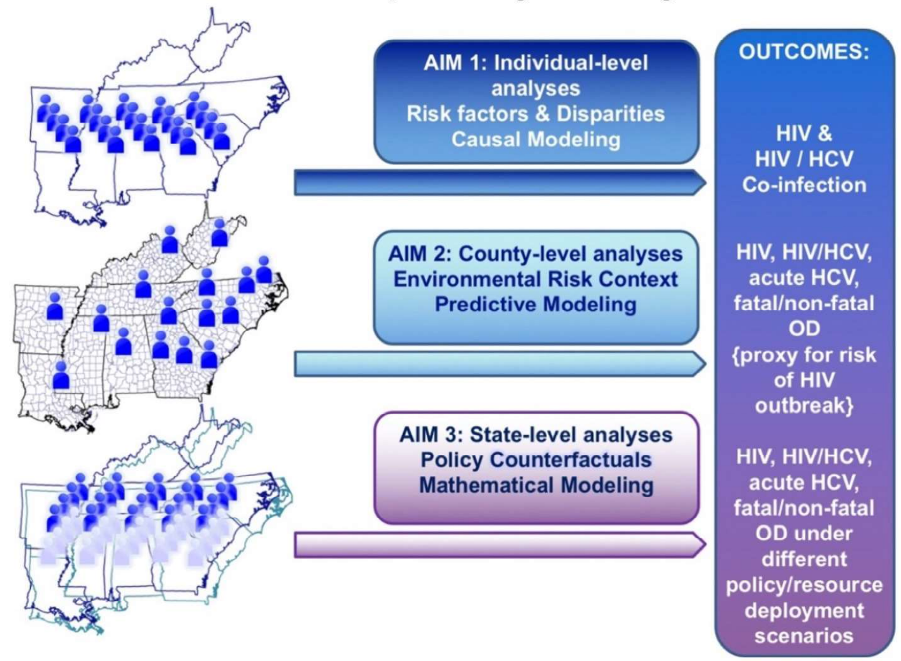

About the ÆTHER Cohort Study

The HIV, HCV, and opioid epidemics disparately impact populations in different regions of the US, with higher burden (51% of new HIV diagnoses in the US) and poorer outcomes (highest HIV mortality in the US, at 6-10 per 1,000 persons with HIV) in the South, particularly largely rural states. Southern states also rank among those with the highest rates of acute and chronic Hepatitis C virus (HCV), with massive increases in HCV infections due to injected opioid use in Tennessee, Kentucky, Virginia, and West Virginia between 2006 and 2012 (from 1 to nearly 4 per 100,000). The region has also seen a dramatic increase in overdose mortality during the COVID-19 pandemic (West Virginia and Tennessee ranked 1st and 3rd in the US, respectively, with ≥50 deaths per 100,000), with opioid abuse a continued driver of the regional HIV/HCV syndemic.
With the relatively recent HIV/HCV outbreak in Scott County, Indiana in mind, the CDC assessed county-level vulnerabilities to an HIV outbreak based on acute HCV infection. Acute HCV infection was used as a proxy of high HIV risk due to the proximal cause of shared injection drug use, an increasingly common practice in areas afflicted with high rates of opioid use and overdose. The research directly informed the initiation of the Tennessee Prescription Drug Overdose Program, a CDC-funded surveillance system to monitor both fatal and non-fatal drug overdoses. Reporting requirements have also been revamped and a new informatics infrastructure has been created to accommodate automated laboratory uploads of viral hepatide antibody, antigen, and nucleic acid testing to ascertain acute HCV infection, alongside the state’s already robust HIV surveillance program. Similar programs now exist in 32 states.
In addition, over the past several years, syringe service programs and expanded access to non-prescription naloxone were made legal under Public Chapters 413 and 596 in Tennessee, while the state’s “fetal assault” law, along with similar ones in Alabama and South Carolina, penalized expectant mothers with opioid addictions until recently.
The ÆTHER Cohort Study will therefore harmonize, link, and analyze readily available “big data” sources to enhance the epidemiology of HIV, HIV/HCV co-infection, and opioid overdose mortality outcomes which will inform HIV/HCV and overdose prevention and treatment activities by improving the targeting of highest- risk/highest-reward populations for their receipt (Aims 1 and 2). Assessing the impact of individual behavior and environmental context (neighborhood characteristics such as structural poverty and disorder, lack of transportation, etc.) as well as policy changes on these outcomes will be an essential addition to the literature, and as importantly, to data dissemination platforms (e.g., dashboards) which will improve deployment of prevention and treatment activities in southern states (Aims 1, 2, and 3). Using epidemiologic research to inform policy, while creating dissemination platforms which may be updated and re-deployed in future for regional pandemic preparedness, means this work will remain a valuable resource for years to come.
Project Aims
Aim: Quantify changing risk of HIV and HIV/HCV co-infection related to individual substance use and sociodemographic patterns in largely rural southern states in the past decade.
Hypothesis: Injection opioid use as a driver of HIV and HIV/HCV co-infection in high-vulnerability counties in the South may have changed with opioid prescribing patterns over the past decade, differentially by rural residence. This aim will enhance our understanding of differences in HIV and HIV/HCV co-infection epidemiology between rural and urban communities.
Aim: Characterize the risk context of those with HIV, HIV/HCV co-infection, and fatal and non-fatal overdose in rural and urban areas of largely rural southern states.
Hypothesis: Counties with high contextual risk indices (more predominant in rural areas) will have higher incidence of both HIV and HIV/HCV co-infection and drug-overdose mortality compared to those with low indices. This aim will identify high-risk/high-reward populations for prevention/treatment.
Aim: Model the impact of non-prescription naloxone use, syringe service programs, and the repeal of “fetal assault” laws on HIV, HIV/HCV infections, and overdose mortality in rural and urban regions of largely rural states (e.g., Alabama, South Carolina, and Tennessee).
Hypothesis: Trajectories of HIV and HCV incidence and drug-overdose mortality will decline more rapidly following implementation of expanded naloxone access and SSPs and repeal of “fetal assault” laws, than prior. This aim will generate evidence to undergird HIV/HCV/opioid policy in the South and nationally.
Recent Work
Carlson JJ, Yazdani E, Amarin JZ, Hackstadt AJ, Garman R, Gulbronson R, Mathieson S, Fields DK, Pettit AC, Nash R, Rebeiro PF; on behalf of the Achieving an End to Tennessee’s HIV/HCV/overdose syndemic through Epidemiologic Research (ÆTHER) Cohort. Going the Distance: HIV Testing Site Access is a Determinant of Both New HIV Diagnoses and Late Presentation in Tennessee. International Workshop on HIV and Hepatitis Observational Databases (IWHOD) 2026.
Carlson JJ, Yazdani E, Amarin JZ, Hackstadt AJ, Pettit A, Mathieson S, Maurer L, Shoup P, Rebeiro PF; on behalf of the Achieving an End to Tennessee’s HIV/HCV/overdose syndemic through Epidemiologic Research (ÆTHER) cohort. Community Health & Socioeconomics Mediate Rurality’s Effect on HIV & HCV Rates in the Southern US. Conference on Retroviruses and Opportunistic Infections (CROI) 2026.
Yazdani E, Hackstadt A, Amarin JZ, Pettit AC, Shannon C, Nash R, Maurer L, Garman R, Mathieson S, Gulbronson R, Shoup P, Korona J, Moses J, Carpenter R, Rebeiro PF, on behalf of ÆTHER. Trends in HIV, HCV, and Overdose Syndemic Outcomes in the American South Before and During COVID-19. Conference on Retroviruses and Opportunistic Infections (CROI) 2026.